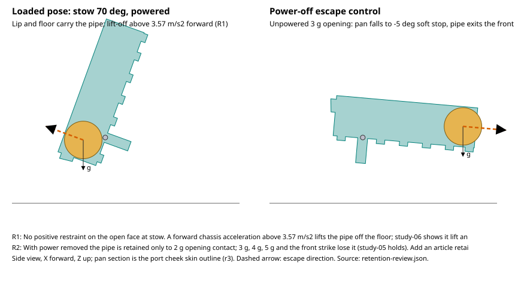

Superseded pending bench gates. The evaluation recommends a fixed pocket and roller nip; this guarded-pan package is kept as comparator A. Receipt status: provisional (two open narrative objectives); all 14 cases pass and the displaced control is rejected.
